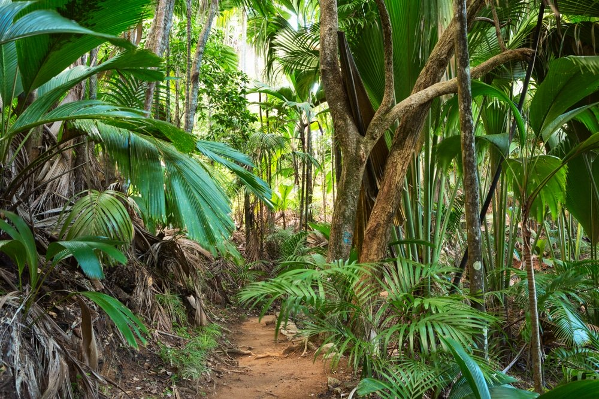
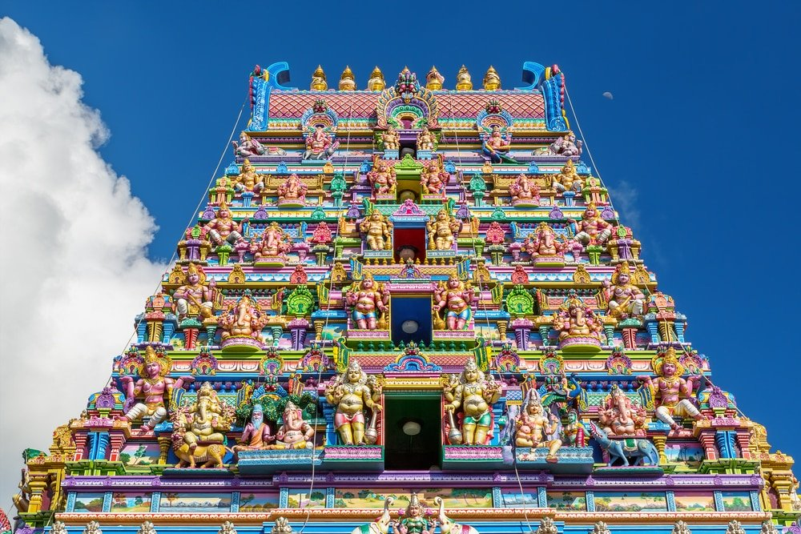
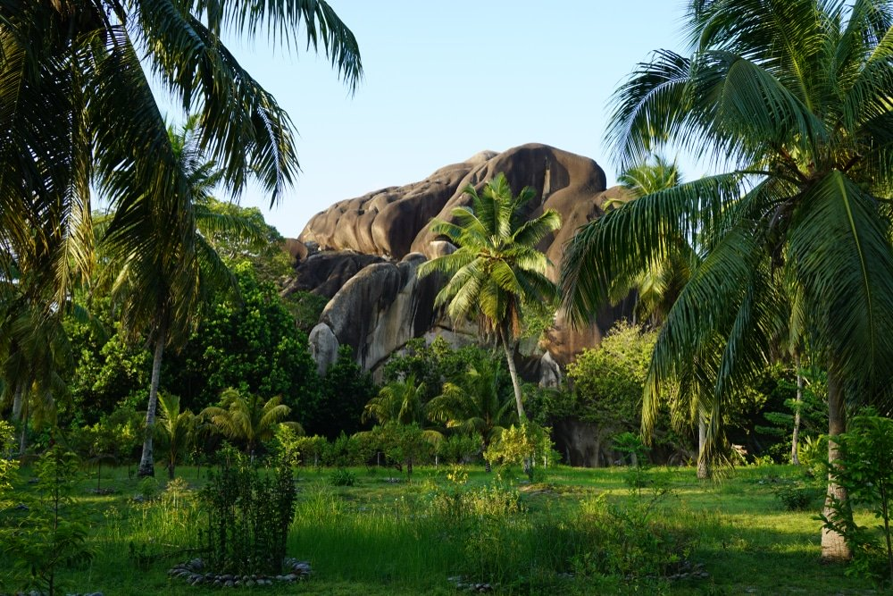

Les Seychelles évoquent immanquablement les plages paradisiaques et le ciel azur.
Aujourd’hui et depuis toujours, les Seychelles sont de véritables joyaux, beautés insulaires aux récifs et aux plages qu’on ne décrit plus.
Préservées par cette insularité, les Seychelles sont d’admirables gardiennes de la nature, offrant refuge à de nombreuses espèces animales et végétales.

Plage d’Anse Source d’Argent (La Digue)
Probablement l’une des plages les plus connues des Seychelles, si ce n’est du monde.Trésor du monde naturel, c’est une longue plage très calme dont l’accès ne se fait malheureusement que par l’Union State Park.
Cependant, si son accès n’est réservé qu’à ceux qui acceptent de payer l’entrée au parc, elle est de plus en plus visitée. Elle attire les visiteurs qui rêvent tous de découvrir cet espace préservé, au sable blanc et fin.
La plage doit certainement son nom aux nombreux rochers de granit gris qui parsèment sa côte. Imposants et décorés de cocotiers et palmiers, le soleil les colore du lever au coucher, variant les teintes jusqu’à l’oranger.

Vallée de Mai (Praslin)
La Vallée de Mai est un parc naturel, si ce n’est le plus beau du monde. Il s’agit d’une importante forêt tropicale et primitive, également classée au Patrimoine mondial de l’UNESCO.Véritable paradis pour les sens, la Vallée de Mai vous fera découvrir des espèces animales et végétales parfois endémiques. Le perroquet noir ou le cocotier des Seychelles par exemple, sont des espèces seychelloises.
Également, il y a la fameuse coco de mer, plus familièrement nommée coco-fesses, qui tire son nom de sa forme singulière…
La Vallée de Mai s’étend sur 19 hectares, vous ne pourrez pas tout y voir, mais prenez le temps de l’explorer.

Victoria (Mahé)
La capitale des Seychelles, Victoria, se trouve sur l’île de Mahé.À l’image de son archipel, c’est une ville très verte et très belle. Il s’agit d’un incontournable de l’île car elle offre de magnifique panorama sur le passé colonial des Seychelles.
Certains bâtiments ont conservé l’architecture, avec les extérieurs de bois et les terrasses surélevées. Visiter les Seychelles, c’est aussi faire face à son passé et découvrir un pan de son histoire.
Très intéressant, dans la mesure où cela donne à la ville une aspect de musée à ciel ouvert. Découvrez notamment la reproduction argentée de Big Ben, dans le centre-ville, appelée Clock Tower.
En outre, la verdure très dense vous rappelle que les seychellois ont à cœur de préserver ce qui les entoure. Faites un arrêt au Port-Victoria : il a des airs de port de pirates, tels qu’on peut se les imaginer.

Union Estate Park (La Digue)
Vous ne pouvez envisager de visiter les Seychelles sans passer par la cocoteraie de l’île de la Digue.Magnifique espace implanté sur une ancienne plantation coloniale, l’Union Estate est une maison de bois fermière cultivant la noix de coco et la vanille.
L’outillage est ancien et une partie de la récolte s’effectue toujours selon la tradition. C’est un endroit merveilleux qui offre une fenêtre sur le passé coloniale des Seychelles et tel qu’on se le représente souvent.
Aussi, imprégnez vous de la verdure et des odeurs qui règnent sur le parc. Vous pourrez saluer quelques tortues terrestres qui savourent la vie dans leur enclos. L’Union Estate Park autorise la visite à vélo, en suivant bien entendu, les sentiers réservés à la pratique.